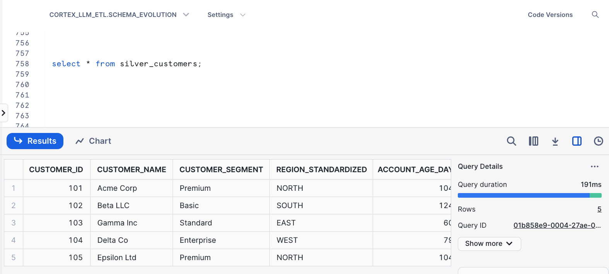

Schema changes in upstream tables, like new fields from sources like Salesforce, must be carefully propagated to all downstream tables. Data Engineers manually tracking and updating each affected table is time-consuming and error-prone, often leading to broken pipelines and data inconsistencies. This guide leverages AI-powered automation to streamline schema propagation, ensuring accurate and consistent updates across data lineage, minimizing errors, and saving valuable time for data engineers.
Prerequisites
- Familiarity with SQL and Snowflake
- Basic knowledge of data lineage concepts
What You'll Build
A powerful solution for automated schema propagation that combines Snowflake's processing capabilities with the intelligence of LLMs, enabling end-to-end lineage management. By the end of this guide, you'll have a framework that detects schema changes in upstream tables and ensures their propagation downstream with AI precision.
What You'll Need
- A Snowflake Account
- Streamlit in Snowflake
What You'll Learn
- How to create an LLM-powered lineage manager that autonomously handles schema evolution across downstream tables
- Leveraging LLMs to automatically assess and adapt DDL changes, simplifying complex workflows
- Using Snowflake tasks for continuous schema monitoring
- Building an intuitive UI with Streamlit for managing schema propagation
This solution leverages the intelligence of LLMs to dynamically analyze and respond to schema changes, creating a seamless flow of information across your data pipeline. The architecture of this application includes:
- Upstream and Downstream Tables in Snowflake: A series of tables that form a lineage, where updates in upstream tables must cascade downstream.
- LLM-Powered Schema Analysis: The core engine uses LLMs to generate and apply appropriate DDL (Data Definition Language) modifications, ensuring the consistency of schema changes across all affected tables.
- Schema Change Monitor: A Snowflake task that continuously tracks schema alterations in upstream tables and logs any detected changes.
- Streamlit-based UI: Provides an accessible, intuitive interface to monitor and manage schema propagation, showcasing LLM-suggested DDL changes for review and approval.
- Automated Propagation Workflow: Utilizes a directed graph traversal algorithm (DFS) to ensure the orderly propagation of changes across the entire data pipeline.
Architecture Diagram

This section includes the setup of the initial tables, which represent different levels in the data lineage (Bronze, Silver, Gold, etc.) using Dynamic Tables. We also create a baseline schema to detect future changes.
The example below has this medallion structure:
Bronze -> Silver -> Gold -> Platinum -> Gold2
CREATE DATABASE IF NOT EXISTS cortex_llm_etl;
CREATE SCHEMA IF NOT EXISTS schema_evolution;
CREATE OR REPLACE TABLE bronze_salesforce_customers (
customer_id NUMBER(38,0),
customer_name VARCHAR(16777216),
customer_region VARCHAR(16777216),
created_date DATE
);
INSERT INTO bronze_salesforce_customers (customer_id, customer_name, customer_region, created_date)
VALUES
(101, 'Acme Corp', 'North', '2022-01-01'),
(102, 'Beta LLC', 'South', '2021-06-15'),
(103, 'Gamma Inc', 'East', '2023-03-20'),
(104, 'Delta Co', 'West', '2022-09-10'),
(105, 'Epsilon Ltd', 'North', '2021-12-30');
CREATE OR REPLACE DYNAMIC TABLE silver_customers
WAREHOUSE = SETUP_WH
LAG = '1 day'
AS
WITH base AS (
SELECT
customer_id,
customer_name,
customer_region,
created_date
FROM bronze_salesforce_customers
)
SELECT
customer_id,
customer_name,
UPPER(customer_region) AS region_standardized, -- Standardize region to uppercase
DATEDIFF('day', created_date, CURRENT_DATE) AS account_age_days -- Calculate account age in days
FROM base
WHERE created_date IS NOT NULL;
CREATE OR REPLACE DYNAMIC TABLE gold_customer_analytics
WAREHOUSE = SETUP_WH
LAG = '1 day'
AS
WITH base AS (
SELECT
customer_id,
customer_name,
region_standardized,
account_age_days
FROM silver_customers
)
SELECT
customer_id,
customer_name,
region_standardized,
account_age_days,
-- Derived field for customer lifetime category
CASE
WHEN account_age_days < 365 THEN 'New'
WHEN account_age_days BETWEEN 365 AND 730 THEN 'Loyal'
ELSE 'Long-Term'
END AS customer_lifetime_category -- New derived column for analytics
FROM base;
CREATE OR REPLACE DYNAMIC TABLE gold_customer_analytics_v2
WAREHOUSE = SETUP_WH
LAG = '1 day'
AS
WITH base AS (
SELECT
customer_id,
customer_name,
region_standardized,
account_age_days
FROM silver_customers
)
SELECT
customer_id,
customer_name,
region_standardized,
account_age_days,
-- New field for customer engagement level based on account age
CASE
WHEN account_age_days < 180 THEN 'Newly Engaged'
WHEN account_age_days BETWEEN 180 AND 540 THEN 'Moderately Engaged'
ELSE 'Highly Engaged'
END AS customer_engagement_level,
-- Simple classification based on region for geographic grouping
CASE
WHEN region_standardized = 'NORTH' OR region_standardized = 'SOUTH' THEN 'Domestic'
WHEN region_standardized = 'EAST' OR region_standardized = 'WEST' THEN 'International'
ELSE 'Unknown'
END AS geographic_category
FROM base;
CREATE OR REPLACE DYNAMIC TABLE platinum_customer_insights
WAREHOUSE = SETUP_WH
LAG = '1 day'
AS
WITH base AS (
SELECT
customer_id,
customer_name,
region_standardized,
account_age_days,
customer_lifetime_category
FROM gold_customer_analytics
)
SELECT
customer_id,
customer_name,
region_standardized,
account_age_days,
customer_lifetime_category,
-- Derived field to indicate customer loyalty status
CASE
WHEN customer_lifetime_category = 'Long-Term' THEN 'High Loyalty'
WHEN customer_lifetime_category = 'Loyal' THEN 'Medium Loyalty'
ELSE 'Low Loyalty'
END AS customer_loyalty_status,
-- Segmenting customers based on region for targeted marketing insights
CASE
WHEN region_standardized = 'NORTH' THEN 'Northern Market'
WHEN region_standardized = 'SOUTH' THEN 'Southern Market'
WHEN region_standardized = 'EAST' THEN 'Eastern Market'
WHEN region_standardized = 'WEST' THEN 'Western Market'
ELSE 'Other Market'
END AS market_segment,
-- Assign a discount eligibility flag based on customer lifetime category and loyalty
CASE
WHEN customer_lifetime_category = 'Long-Term' OR customer_loyalty_status = 'High Loyalty' THEN 'Eligible'
ELSE 'Not Eligible'
END AS discount_eligibility_flag,
-- Customer engagement level based on age and loyalty, for example purposes
CASE
WHEN account_age_days > 730 AND customer_loyalty_status = 'High Loyalty' THEN 'Highly Engaged'
WHEN account_age_days BETWEEN 365 AND 730 THEN 'Moderately Engaged'
ELSE 'Newly Engaged'
END AS engagement_level
FROM base;
In this part, you'll create a Snowflake task to continuously monitor schema changes in upstream tables. When a change is detected, the task logs it in a schema change log and updates the schema baseline for consistency.
CREATE OR REPLACE TABLE schema_baseline (
table_name STRING,
column_name STRING,
data_type STRING
);
CREATE OR REPLACE TABLE schema_change_log (
change_detected_at TIMESTAMP,
table_name STRING,
column_name STRING,
data_type STRING,
change_type STRING
);
CREATE OR REPLACE TASK schema_change_monitor
WAREHOUSE = SETUP_WH
SCHEDULE = 'USING CRON * * * * * UTC' -- Runs every minute
AS
BEGIN
INSERT INTO schema_change_log (change_detected_at, table_name, column_name, data_type, change_type)
SELECT
CURRENT_TIMESTAMP AS change_detected_at,
table_name,
column_name,
data_type,
'ADDED' AS change_type
FROM INFORMATION_SCHEMA.COLUMNS
WHERE table_schema = 'SCHEMA_EVOLUTION'
AND table_catalog = 'CORTEX_LLM_ETL'
AND column_name NOT IN (SELECT column_name FROM schema_baseline)
AND table_name != 'SCHEMA_CHANGE_LOG'
ORDER BY TABLE_NAME;
INSERT INTO schema_baseline (table_name, column_name, data_type)
SELECT table_name, column_name, data_type
FROM INFORMATION_SCHEMA.COLUMNS
WHERE table_schema = 'SCHEMA_EVOLUTION'
AND table_catalog = 'CORTEX_LLM_ETL'
AND (table_name, column_name) NOT IN (SELECT table_name, column_name FROM schema_baseline)
ORDER BY TABLE_NAME;
END;
ALTER TASK schema_change_monitor RESUME;
In this part, simulate a schema change in the upstream table by adding a new column. This change will automatically be detected and logged, triggering downstream updates.
Currently, the unaltered upstream table looks like this: 
-- Alter table to add a new column
ALTER TABLE bronze_salesforce_customers
ADD COLUMN customer_segment VARCHAR(16777216);
-- Set initial values for existing records
UPDATE bronze_salesforce_customers
SET customer_segment = CASE
WHEN customer_region = 'North' THEN 'Premium'
WHEN customer_region = 'South' THEN 'Basic'
WHEN customer_region = 'East' THEN 'Standard'
WHEN customer_region = 'West' THEN 'Enterprise'
ELSE 'Unknown'
END;
With the groundwork laid, you're ready to integrate the Streamlit-based UI for hands-on control of schema propagation. This UI, backed by LLMs, allows you to manage schema changes in a user-friendly environment. Users will be able to visualize lineage, apply or preview LLM-suggested DDL changes, and monitor the entire propagation process.
Below is the code you need to build this interface. Copy this entire code and Paste it onto your Streamlit in Snowflake App.
import streamlit as st
import pandas as pd
import re
from snowflake.snowpark.context import get_active_session
import time
from collections import defaultdict
st.set_page_config(layout="wide")
# Database configurations
DATABASE = 'CORTEX_LLM_ETL'
SCHEMA = 'SCHEMA_EVOLUTION'
SCHEMA_BASELINE_TABLE = 'CORTEX_LLM_ETL.SCHEMA_EVOLUTION.SCHEMA_BASELINE'
SCHEMA_CHANGE_LOG = 'CORTEX_LLM_ETL.SCHEMA_EVOLUTION.SCHEMA_CHANGE_LOG'
TABLE_NAME = 'TABLE_NAME'
SOURCE_OBJECT_NAME = 'SOURCE_OBJECT_NAME'
DISTANCE = 'DISTANCE'
EXISTING_DDL = 'EXISTING_DDL'
CORTEX_RESPONSE = 'CORTEX_RESPONSE'
MODEL_NAME = 'llama3.1-70b'
TARGET_OBJECT_NAME = 'TARGET_OBJECT_NAME'
TARGET_OBJECT_DOMAIN = 'TARGET_OBJECT_DOMAIN'
CHANGE_DETECTED_AT = 'CHANGE_DETECTED_AT'
BRONZE_TABLE = 'BRONZE_SALESFORCE_CUSTOMERS'
# Initialize session
session = get_active_session()
st.title("LLM-based Schema Lineage Manager 🎈")
st.write("Effortlessly propagate schema changes across your data lineage with AI")
# Initialize all session state variables
if "current_index" not in st.session_state:
st.session_state.current_index = 0
if "success_message_shown" not in st.session_state:
st.session_state.success_message_shown = False
if "auto_propagate_done" not in st.session_state:
st.session_state.auto_propagate_done = False
if "manual_propagate_active" not in st.session_state:
st.session_state.manual_propagate_active = False
if "dfs_order" not in st.session_state:
st.session_state.dfs_order = None
if "current_dfs_index" not in st.session_state:
st.session_state.current_dfs_index = 0
# Function to visualize lineage path
def visualize_lineage_path(lineage_df):
# Sort by distance for correct path order
lineage_df = lineage_df.sort_values(by=DISTANCE)
# Initialize paths dictionary to store each branch
paths = {}
# Iterate through each row and group by source object name
for _, row in lineage_df.iterrows():
source_name = row[SOURCE_OBJECT_NAME]
target_name = row[TARGET_OBJECT_NAME]
# Check if source already exists as a key in paths dictionary
if source_name in paths:
# Append new target if this is a continuation of an existing path
paths[source_name].append(target_name)
else:
# Start a new path branch from this source
paths[source_name] = [target_name]
# Generate the lineage paths in the form of strings
lineage_paths = []
for source, targets in paths.items():
path_string = f"{source} --> {' --> '.join(targets)}"
lineage_paths.append(path_string)
# Join paths with a double newline to clearly separate each distinct path
return "\n\n".join(lineage_paths)
def fetch_schema_changes():
query = f"SELECT * FROM {SCHEMA_CHANGE_LOG} ORDER BY {CHANGE_DETECTED_AT} DESC"
return session.create_dataframe(session.sql(query).collect()).to_pandas()
# Function to get lineage information for a selected table
def return_lineage_query_for_changed_table(changed_table):
lineage_query = f"""
SELECT
{DISTANCE},
{SOURCE_OBJECT_NAME},
{TARGET_OBJECT_NAME},
{TARGET_OBJECT_DOMAIN}
FROM TABLE (SNOWFLAKE.CORE.GET_LINEAGE('{DATABASE}.{SCHEMA}.{changed_table}', 'TABLE', 'DOWNSTREAM', 10))
WHERE SOURCE_STATUS = 'ACTIVE' AND TARGET_STATUS = 'ACTIVE';
"""
return lineage_query
# Function to clean LLM response
def clean_ddl_response(ddl_response):
return re.sub(r'```', '', ddl_response).strip()
# Function to create LLM prompt with schema change log details
def create_llm_prompt(existing_table_ddl, schema_change_log_df, upstream_table_name, target_table_name, mode='apply'):
# Convert schema change log information into a readable string format
schema_change_log_info = str(schema_change_log_df[0])
if mode == 'apply':
prompt = f"""
This is the existing DDL for the target table `{target_table_name}`:
{existing_table_ddl}
Based on the schema changes detected in the upstream table `{upstream_table_name}`, shown below:
{schema_change_log_info}
Make the necessary modifications to the DDL for `{target_table_name}` to incorporate these changes from `{upstream_table_name}`.
Ensure that:
1. The structure and formatting of the original DDL is preserved, including any `WITH` clauses, transformations, or filters.
2. The newly added or modified columns are integrated into the DDL appropriately, reflecting only the specified changes.
3. Only the final SQL query is returned as plain text—do not include explanations, comments, or extraneous characters.
Return only the SQL query with the updated structure in plain text.
"""
else: # 'preview' mode for a SELECT preview query
prompt = f"""
This is the existing DDL for the target table `{target_table_name}`:
{existing_table_ddl}
Based on the schema changes detected in the upstream table `{upstream_table_name}`, shown below:
{schema_change_log_info}
Generate a `SELECT` query to preview the modified structure for `{target_table_name}`.
Ensure that:
1. The query mirrors the original DDL structure, incorporating any transformations or `WITH` clauses.
2. The new columns from `{upstream_table_name}` are included only as specified in the schema change log.
3. Only the final SQL query is returned as plain text—do not include explanations, comments, or extraneous characters.
Return only the SQL query for the preview in plain text.
"""
return prompt
# Generate modified DDL for preview table
def generate_preview_table_ddl(ddl_sql, preview_table_name="PREVIEW_LLM_TABLE"):
modified_ddl = re.sub(r"(create or replace dynamic table\s+)(\w+)", f"\\1{preview_table_name}", ddl_sql, flags=re.IGNORECASE)
return modified_ddl
# Function to apply changes automatically across all downstream tables
def auto_propagate_changes(lineage_df, upstream_table_name):
for index, row in lineage_df.iterrows():
target_table_name = row[TARGET_OBJECT_NAME]
target_table_domain = row[TARGET_OBJECT_DOMAIN]
# Fetch existing DDL for the current downstream table
existing_table_ddl_query = f"SELECT GET_DDL('{target_table_domain}', '{target_table_name}') AS {EXISTING_DDL}"
existing_table_ddl_df = session.create_dataframe(session.sql(existing_table_ddl_query).collect()).to_pandas()
existing_table_ddl = existing_table_ddl_df[EXISTING_DDL].iloc[0]
# Generate apply prompt
apply_prompt = create_llm_prompt(existing_table_ddl, schema_change_log_df, upstream_table_name, target_table_name, mode='apply')
# Get the LLM-suggested DDL
apply_response = session.sql(f"SELECT snowflake.cortex.complete('{MODEL_NAME}', $${apply_prompt}$$)").collect()
new_ddl_suggestion = clean_ddl_response(apply_response[0][0])
# Apply the DDL directly
try:
session.sql(new_ddl_suggestion).collect()
st.success(f"Applied DDL for {target_table_name}")
time.sleep(2) # Short pause to display success message
except Exception as e:
st.error(f"Error applying DDL to {target_table_name}: {e}")
break # Stop further propagation if an error occurs
# Load and display schema change log data
data = fetch_schema_changes()
st.write("Schema Change Log:")
data_container = st.empty()
data_container.dataframe(data)
schema_change_log_df = session.sql(f"SELECT * FROM {SCHEMA_CHANGE_LOG}").collect()
# Populate the selection list with unique table names
schema_change_log = session.create_dataframe(session.sql(f"SELECT * FROM {SCHEMA_CHANGE_LOG}").collect()).to_pandas()
changed_table_list = list(schema_change_log[TABLE_NAME].unique())
changed_table_list.insert(0, 'Select Table')
selected_source_object = st.selectbox('Which changed table do you want to review?', changed_table_list)
@st.cache_data
def cache_lineage_df(selected_source_object):
# Initialize lineage info
lineage_query = return_lineage_query_for_changed_table(selected_source_object)
lineage_df = session.sql(lineage_query).collect()
return lineage_df
@st.cache_data
def cache_lineage_path(lineage_df):
lineage_pandas_df = session.create_dataframe(lineage_df).to_pandas()
lineage_path = visualize_lineage_path(lineage_pandas_df)
return lineage_path
# Add these functions after your existing helper functions
def build_adjacency_list(lineage_df):
"""
Build an adjacency list representation of the lineage graph from the lineage dataframe.
"""
adj_list = defaultdict(list)
for _, row in lineage_df.iterrows():
source = row[SOURCE_OBJECT_NAME]
target = row[TARGET_OBJECT_NAME]
adj_list[source].append({
'table_name': target,
'domain': row[TARGET_OBJECT_DOMAIN],
'distance': row[DISTANCE]
})
return adj_list
def get_dfs_order(adj_list, start_table):
"""
Get the DFS traversal order of tables
"""
visited = set()
traversal_order = []
def dfs(table):
if table not in visited:
visited.add(table)
for target in adj_list[table]:
traversal_order.append({
'source': table,
'target': target['table_name'],
'domain': target['domain']
})
dfs(target['table_name'])
dfs(start_table)
return traversal_order
# Modified auto_propagate_changes function
def auto_propagate_changes(lineage_df, upstream_table_name):
# Convert lineage_df to pandas if it's not already
lineage_pandas_df = session.create_dataframe(lineage_df).to_pandas() if not isinstance(lineage_df, pd.DataFrame) else lineage_df
# Build adjacency list and get DFS order
adj_list = build_adjacency_list(lineage_pandas_df)
dfs_order = get_dfs_order(adj_list, upstream_table_name)
# Process each table in DFS order
for item in dfs_order:
target_table_name = item['target']
target_table_domain = item['domain']
source_table = item['source']
# Fetch existing DDL for the current downstream table
existing_table_ddl_query = f"SELECT GET_DDL('{target_table_domain}', '{target_table_name}') AS {EXISTING_DDL}"
existing_table_ddl_df = session.create_dataframe(session.sql(existing_table_ddl_query).collect()).to_pandas()
existing_table_ddl = existing_table_ddl_df[EXISTING_DDL].iloc[0]
# Generate apply prompt
apply_prompt = create_llm_prompt(existing_table_ddl, schema_change_log_df, source_table, target_table_name, mode='apply')
# Get the LLM-suggested DDL
apply_response = session.sql(f"SELECT snowflake.cortex.complete('{MODEL_NAME}', $${apply_prompt}$$)").collect()
new_ddl_suggestion = clean_ddl_response(apply_response[0][0])
# Apply the DDL directly
try:
session.sql(new_ddl_suggestion).collect()
st.success(f"Applied DDL for {target_table_name}")
time.sleep(2) # Short pause to display success message
except Exception as e:
st.error(f"Error applying DDL to {target_table_name}: {e}")
break # Stop further propagation if an error occurs
# Initialize additional session state variables
if "dfs_order" not in st.session_state:
st.session_state.dfs_order = None
if "current_dfs_index" not in st.session_state:
st.session_state.current_dfs_index = 0
# Update the main UI section where the buttons are defined
if selected_source_object != 'Select Table':
st.write('You selected:', selected_source_object, '\n')
# Initialize lineage info
with st.write("_Processing Table's Lineage via Snowflake's Lineage Function..._")
lineage_df = cache_lineage_df(selected_source_object)
lineage, auto_propagation = st.columns(2)
# Option to display lineage path
if lineage.button("Show Lineage Path"):
lineage_path = cache_lineage_path(lineage_df)
st.write("Impacted Downstream Tables:")
st.write(lineage_path)
# Button for automatic downstream propagation
if auto_propagation.button("Auto-Propagate Changes"):
lineage_pandas_df = session.create_dataframe(lineage_df).to_pandas()
auto_propagate_changes(lineage_pandas_df, selected_source_object)
st.session_state.auto_propagate_done = True
st.write("All tables in the lineage have been processed.")
# Button to start manual propagation
if st.button("Manually Propagate Changes") or st.session_state.manual_propagate_active:
st.session_state.manual_propagate_active = True
# Initialize DFS order if not already done
if st.session_state.dfs_order is None:
lineage_pandas_df = session.create_dataframe(lineage_df).to_pandas()
adj_list = build_adjacency_list(lineage_pandas_df)
st.session_state.dfs_order = get_dfs_order(adj_list, selected_source_object)
st.session_state.current_dfs_index = 0
# Check if we still have tables to process
if st.session_state.current_dfs_index < len(st.session_state.dfs_order):
current_item = st.session_state.dfs_order[st.session_state.current_dfs_index]
target_table_name = current_item['target']
target_table_domain = current_item['domain']
source_table = current_item['source']
st.write(f"Processing: {target_table_name}")
# Fetch existing DDL for the current downstream table
existing_table_ddl_query = f"SELECT GET_DDL('{target_table_domain}', '{target_table_name}') AS {EXISTING_DDL}"
existing_table_ddl_df = session.sql(existing_table_ddl_query).collect()
existing_table_ddl = existing_table_ddl_df[0][EXISTING_DDL]
# Generate preview and apply prompts
preview_prompt = create_llm_prompt(existing_table_ddl, schema_change_log_df, source_table, target_table_name, mode='preview')
apply_prompt = create_llm_prompt(existing_table_ddl, schema_change_log_df, source_table, target_table_name, mode='apply')
# LLM suggestions for DDL updates
apply_response = session.sql(f"SELECT snowflake.cortex.complete('{MODEL_NAME}', $${apply_prompt}$$)").collect()
new_ddl_suggestion = clean_ddl_response(apply_response[0][0])
# Show DDL comparison side by side
col1, col2 = st.columns(2)
with col1:
st.text_area("Existing DDL", value=existing_table_ddl, height=300, key=f"existing_ddl_{target_table_name}")
with col2:
edited_sql = st.text_area("LLM Suggested New DDL", value=new_ddl_suggestion, height=300, key=f"suggested_ddl_{target_table_name}")
preview_button, apply_button = st.columns(2)
# Preview button
if preview_button.button("Preview Changes", key=f"preview_{st.session_state.current_dfs_index}"):
preview_table_sql = generate_preview_table_ddl(edited_sql)
try:
session.sql(preview_table_sql).collect()
st.write("Preview Results:")
st.write(session.sql("SELECT * FROM PREVIEW_LLM_TABLE").collect())
except Exception as e:
st.error(f"Error executing preview: {e}")
finally:
session.sql("DROP TABLE IF EXISTS PREVIEW_LLM_TABLE").collect()
# Apply changes and proceed to the next table
if apply_button.button("Apply Changes", key=f"apply_{st.session_state.current_dfs_index}"):
try:
session.sql(edited_sql).collect()
st.success(f"Applied DDL for {target_table_name}")
st.session_state.success_message_shown = True
except Exception as e:
st.error(f"Error applying DDL: {e}")
# Automatically proceed to the next table after applying changes
if st.session_state.success_message_shown:
time.sleep(2) # Short pause to show success message
st.session_state.success_message_shown = False
st.session_state.current_dfs_index += 1
# Rerun if there are more tables to process; else end propagation
if st.session_state.current_dfs_index < len(st.session_state.dfs_order):
st.rerun()
else:
st.session_state.manual_propagate_active = False
st.session_state.dfs_order = None # Reset DFS order
st.write("All tables in the lineage have been processed.")
else:
st.session_state.manual_propagate_active = False
st.session_state.dfs_order = None # Reset DFS order
st.write("All tables in the lineage have been processed.")
User Guide
- Initialize the Application: Launch the Streamlit in Snowflake app in your Snowsight UI. Select
cortex_llm_etlas the database andschema_evolutionas your schema. Copy and past the streamlit code after clicking oneditbutton.
- Select a Table to Review: Use the dropdown to select the upstream table where schema changes have been detected. It will take some time for Snowflake's lineage to run based on the complexity of your medallion structure.

- View Lineage Path: Click "Show Lineage Path" to view all downstream tables affected by changes in the selected table.

- Propagation Options:
- Auto-Propagate: Automatically applies all changes through the lineage using Depth First Search Technique (DFS).
- Manual Propagation: Allows for a step-by-step review and approval of changes for each downstream table.

- Preview and Apply Changes: When in manual mode, click "Preview Changes" to view the LLM-suggested DDL updates. Once satisfied, click "Apply Changes" to finalize them.


- Monitor Propagation: The system tracks each step, providing success or error messages to keep users informed.
Note: The LLM dynamically suggests DDL modifications for consistency across lineage. It uses metadata to assess how each downstream table should adapt, factoring in dependencies and transformations.
To verify the propagated schema changes directly in Snowflake, you can query each downstream table:
- Open your Snowflake worksheet.
- Run a simple
SELECT *query on the downstream tables to view the updated structures and ensure consistency across the lineage. - Optionally, review any new columns or data transformations to confirm that the changes align with the desired schema modifications.

This verification step provides confidence that the lineage propagation was executed accurately.
What You Learned
In this guide, you implemented a powerful LLM-driven solution to automatically propagate schema changes across a data lineage in Snowflake. By combining Snowflake's schema monitoring capabilities with Streamlit's interactive interface and LLM intelligence, you've enabled efficient, automated schema consistency throughout your pipeline, ensuring data integrity with minimal manual intervention.
Summary:
- How to set up and configure a Snowflake environment to monitor and track schema changes.
- Building Snowflake tasks and tables to log and manage schema evolution.
- Leveraging an LLM to dynamically suggest and apply DDL modifications across downstream tables.
- Using Streamlit to interactively manage schema propagation, with both automatic and manual options.